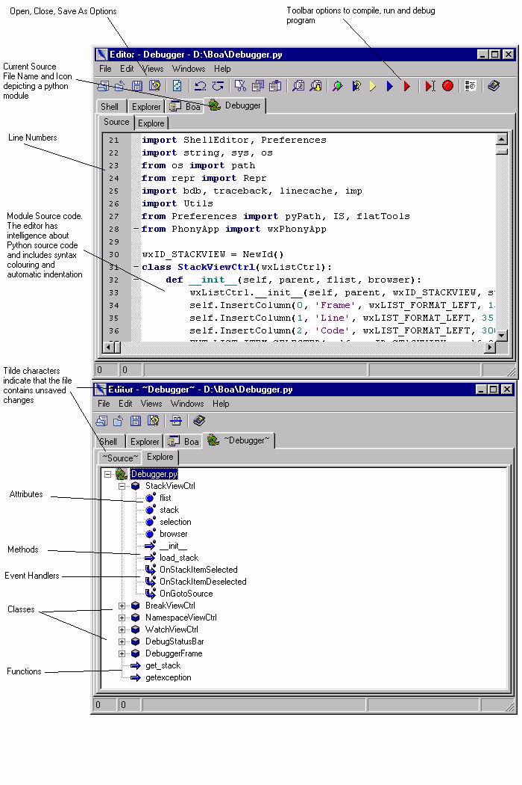

| Getting Started Guide for Boa Constructor |
| Getting Started Guide for Boa Constructor |
The Editor window is one of the three windows which is created when
you run Boa Constructor. If you close the Editor Window, you can re-open
it from the Palette Window using the  Button.
Button.
When it is opened the Editor provides two panes, the Shell pane and the Explore pane. You can now open a source file into the Editor. There are several methods for opening a source file in Boa Constructors editor.
When a source file is opened, the editor creates a new pane for the source. Within that pane, the editor creates another notebook to provide alternative views of the file source. The initial two Views are 'Source' and 'Explore'. The Source pane shows the source code and allows you to change the source code. The Explore pane provides a tree view of the module, with methods and components nested under classes.
The 'Explore' Pane shows a Class based view of your source. The methods and attributes of each class in the source are displayed. You can double-click the mouse left button on an attribute or method, and the 'Source' view will display the definition of that item.
The 'Views' menu in the editor provides other views on the source. These are Hieriarchy, Documentation, ToDo, Imports and UML.
The Editor provides a 'diff' tool on the 'File' menu. This tool can be used to compare the version of a source file in the editor with another version of the file.
| Getting Started Guide for Boa Constructor |